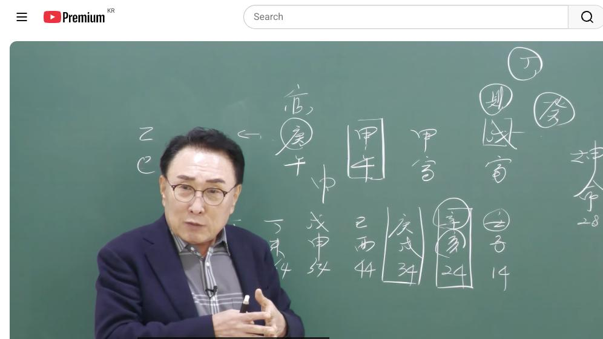

남촌물상TV 전체 문서 › 동영상 V0155
갑오 일주 운명의 대반전 이것이 답이다

| 문서 번호 | V0155 (동영상) |
|---|---|
| 영상 URL | https://www.youtube.com/watch?v=d_aeqZAMuOI |
| 영상 ID | d_aeqZAMuOI |
| 게시일 | 2025-11-06 |
| 길이 | 17:56 (1076초) |
| 조회수 | 421회 (수집 시점 기준) |
| 카테고리 | Education |
| 자막 | ko (자동생성) |
| 수집 시각 | 2026-08-30 17:03 (KST) |
영상 설명 (YouTube 설명 원문 그대로)
사주상담 # 물상론 사주# 명리학# 성명학# 궁합# 택일#
물형상# 운명학# 남촌물상론#
전체 자막 (444구간 · 타임스탬프 클릭 시 해당 장면으로 이동)
[0:06]자, 안녕하세요. 자, 여자 사주
[0:08]28세.
[0:09]자, 무인, 갑인, 갑오, 경호 이제
[0:13]이런 사주예요. 그러니까이 사주가
[0:16]사실 풀기가 쉽지 않아요. 얼른 답을
[0:19]적응하기도 어렵고 굉장히 힘듭니다.
[0:22]자 그러면 우리가이
[0:24]어 일간론에서
[0:27]갑오 일주의 특성도 있을 거고 또
[0:30]따고 똑같은 갑이 두 개 있을 때
[0:32]경쟁자와 또 같을 수도 있고 때로
[0:35]가서 나의 어머니 역할도 되고 이제
[0:37]이렇게 볼 수가 있다 그 말이에요.
[0:39]내가 여자가 갑이면 여기는 어머 부모
[0:42]자리니까 엄마도 갑이다. 이렇게
[0:44]이해하셔도 된다 그 말이에요. 근데
[0:47]첫째 이제에 조은
[0:50]다 오행이 있는데 뭐가 없어요? 물이
[0:52]>> 자 물이 없어요. 자 물이 없다.이
[0:56]물이 없다는 얘기는 갑목이
[0:58]살아나가는데 가장 필요한 물이 없다고
[1:02]보시면 되죠. 그러면 나무가 살 수
[1:03]있어? 없어요? 없잖아요. 이제
[1:05]이게이 사람의 개일 단점이고
[1:08]핵심이에요. 그러면 조건이 이제 재을
[1:11]먼저 따져 봤을 때이 사람이 관은
[1:13]어디 있어요? 관.
[1:15]>> 자, 관은 여기 있죠? 관이 자,
[1:17]관이 여기 있어요.
[1:20]>> 자, 그다음에 재물은 어디 있습니까?
[1:22]국가자리
[1:22]>> 자 국가자리이 공대기업자리 여기 제가
[1:25]있어요. 여기 재무 재가 있다.
[1:29]자 그러면이 사람은 쉽게 갑목이 저
[1:33]무토에 대기업자리 심어지기 때문에
[1:35]대기업에 관계된 일을 할 거다.
[1:37]이렇게 보시면 되지. 음. 그러니까
[1:40]공직이라는 것은 병화가 따라야
[1:42]공무원이고
[1:44]병화가 따지 않고 그냥 심어진 경우는
[1:47]뭐라? 대기업
[1:48]>> 대기업에 근무할 수 있다. 이렇게
[1:50]얼름 찾아볼 수가 있는 거예요. 자,
[1:53]그다음에 자, 제일 살아나가는데
[1:56]필요한 이제에 물의 조건이 있어야 될
[1:58]거 아니에요. 그럼이 사람이 뭐를
[2:00]해야 될 것이며, 어떻게 먹고 살
[2:02]것이며, 직업을 어떻게 찾아야 될
[2:04]것인가를 한번 생각을 해 보자. 그
[2:06]말입니다. 자, 그러면 여기에서 어,
[2:09]없는 물을 어디서듭니까?
[2:12]자,
[2:13]>> 여기 무토에서 계수를 끌어죠. 그게
[2:16]우리가 천관합의 원리에서 잘 보셨는데
[2:20]자 무게화는
[2:23]정화요 병화예요?
[2:24]>> 정화
[2:25]>> 정화죠.
[2:26]>> 그럼 여기에 이제 소위 무교화하는
[2:28]정화라는 것이 답이 나왔어요. 우리
[2:30]우리 간법으로.
[2:32]그러면 쉽게 얼름 생각할 때 갑목이
[2:36]저 대기업 자리에서 무토에 심어져서
[2:39]정화에 계수를 끌어다가 결과 꼽히는
[2:42]역할이기 때문에 저 정화가 뭐냐
[2:45]이게? 이게 직업이에요.
[2:47]쉽게 얘기해서 어느 원국 자체로 볼
[2:50]때 그러면 정화라는 것이
[2:54]자기가 갑목의 등불 역할이 정화하죠.
[2:57]지금 현재 근데 정화는 우리가 크게
[2:59]봤을 때 정신 세계 주식에 관련된
[3:02]일도 된다 그 말입니다.
[3:05]대기업 산화에서. 그러면 이제
[3:08]계수라는 자체가 저 작은 물에서 먹고
[3:12]살기 힘들잖아요. 그래도 근데
[3:13]그나마도 괜찮했던 것은 초운이 이렇게
[3:17]물으로 쭉 가고 있었기 때문에이
[3:20]사람이 존재하고 있다라고 보시면
[3:21]돼요.
[3:23]초원이 임자 신내 여기까지예요. 그럼
[3:26]34살 이후부터는 경술부터는 이제
[3:29]물이 없는 거예요. 이제 여기에서
[3:31]문제가 핵심이 답이 정해지고이 사람이
[3:34]가장 단점에서 문제가 생기는 겁니다.
[3:37]이걸 찾아야 된다 그 말입니다.
[3:39]그러면 지금 28살인데
[3:41]이제에 학교 쪽에 열 잠깐 보면
[3:45]14살 때가 대운이 임자 대운이죠.
[3:49]그러면 여기 임자 대운이에요. 그럼
[3:51]14살부터 23살 사이에이 친구가
[3:55]공부를 잘했겠냐 못 했겠냐 볼 수도
[3:57]있는 거예요. 그러면 자 여기 물이
[4:01]왔으니 자 물이 나무가 심어 물이
[4:04]나무가 성장하죠. 간단하게 목이라는
[4:08]것은 교육이기 때문에 공부를 잘할
[4:10]수가 있다라고 봐야 되고 지지에
[4:13]이노수이 심어지면 이노수이 움직인단
[4:16]말이야. 그러니까 꽃도 피우고 공부
[4:17]잘해 못해 잘할 수 있다. 그럼 얘는
[4:19]공부를 잘하는 사람이에요.
[4:22]>> 학교 때.
[4:23]>> 음.
[4:23]>> 자, 그다음에 그러면이 사람이 17살
[4:26]때가 몇 저 무슨 전년인가 봐
[4:28]보세요. 17살 때가
[4:30]>> 17 갑에요.
[4:31]>> 갑보죠. 자, 갑보였다.
[4:34]갑본 일곱살 때 그다음에을
[4:37]>> 미
[4:37]>> 을미 그다음에
[4:40]요렇게 여기서 됐잖아요. 그다음
[4:43]18 19 이렇게 이제이 고등학교
[4:47]1학년, 2학년, 3학년 때 핵심력이
[4:49]제일 중요한 거예요. 자, 여러분
[4:51]갑년이 됐을 때 쓰이 됐죠?
[4:54]>> 네.
[4:54]>> 자, 쓰리갑이도 하나가 됐어요.
[4:56]그러니까 이때 17살 때 인호술 되
[4:59]공부를 잘해 못해. 잘하죠. 이제
[5:01]불탔지 않냐고 생각하는데 대운에서
[5:03]뒷받침을 해 주서 물의 역할을 하고
[5:05]있다로 보시면 돼요. 그러 보니까
[5:07]굉장하게 성장할 수 있다라고 보는
[5:08]거죠. 공부를 잘할 수 있어요. 근데
[5:12]2학년 때 가서 이제 우리가 대학교
[5:15]갈 때 문과냐 이과냐를 고별하잖아요.
[5:17]이제 이게 이게 핵심이데
[5:19]얘 입장에서는 분명히 대학을 크게
[5:23]생각을 하고 정식 관할 거예요. 근데
[5:25]여기 이제 이과 문과 결정할 때
[5:27]여기에서 합을 하고 올리 합을
[5:29]하겠죠.
[5:31]>> 그럼 신금이 됐죠.
[5:32]>> 신급필은 6임이죠. 자,
[5:35]>> 그러면 이제 2학년 때 가서 본래
[5:38]사주 특성은 문과 성향인데 이과
[5:42]성향으로 갈 거냐라고 생각할 때 취업
[5:44]위주로 가는 거예요. 왜? 금이라는
[5:47]것은 나무가 살아가기서 물을 만들 수
[5:50]있는 역할을 해 주기 때문에 아하
[5:52]취업을 이주로 해야 되겠다고 생각을
[5:54]하는 거죠. 마음이 바뀌는 거예요.
[5:56]그러니까 자, 누구이 사주를 볼 때
[6:00]어떻게 하면이 사람이이 18살 때
[6:03]대학을 포기하고 취업 위주로 가게 돼
[6:07]있는가를 알 수가 있다 그 말입니다.
[6:09]음. 자, 그럼 어떻게 가느냐?이
[6:14]을경 하불에서 육금이 왔다는 얘기는이
[6:17]금에서 새로운 당시 제가 끌 먼서라
[6:21]그랬어요. 자, 신이 오면 뭘 끌고
[6:24]와요?
[6:25]평화를 꾸는 새로운 뭔가를 하고
[6:27]싶다는 얘기죠.
[6:29]>> 자, 그렇게 되면은 지지의 유금이라는
[6:31]것은 뭔가 손의 기술적인요인, 해계,
[6:35]금융 이런게 통해서 뭔가를지가 해보고
[6:39]싶다. 취업을 해봅시다. 생각이에요.
[6:41]그러니까 이때 대학을 포기하게 된다
[6:43]그 말이지. 가고 싶은데. 근데
[6:47]지뜻가는 뜻은 아니에요.
[6:49]자, 그러면 우리가 보면 금생 수에서
[6:53]물을 만들어 준 건 누구야?
[6:55]>> 엄마지. 그 엄마 역할로서 결과적으로
[6:59]취업을 먼저 한게 좋을 것 같다고
[7:00]권유를 받았을 거다. 이렇게 보시면
[7:02]맞아요. 그러면 이런 사람 경우는
[7:04]이제 실질적으로 대학을 가고 싶은데
[7:07]결과적으로 상업학교 쪽에서 보통 시골
[7:10]같은 보면은 뭐 종합고등학교가 막
[7:12]있잖아요. 그래서 이제 뭐 진학반
[7:14]가느냐 또 그러면 상업반을 가느냐
[7:16]찾아서 관계에서 얘기를 봐야
[7:18]하잖아요. 그러니까 이제이 세상
[7:20]경우는 그쪽으로 침유치게 돼 있다.
[7:22]그 그럼 3학년 때 보면 어떤 거냐?
[7:24]3학년 때 병 병신이죠.
[7:25]>> 예. 3학년 때 그럼 이런 애들이
[7:28]이제 3학년 때 병신이면
[7:31]여기에서 한번 더 생각을 해 봐야
[7:33]돼. 자, 병화가 꽃을 핀다는 얘기
[7:36]아닙니까? 그러면 새로운 뭔가가
[7:39]된다는 얘기죠. 나무는 꼽히면 결실을
[7:41]배운 거지니까 결과물이 있어야 한다는
[7:43]얘기예요. 그럼 꼽히면 결과물이 생길
[7:45]거 아니에요. 그것이 이제 바로
[7:47]취업인데 그럼 뭘로 어디로 취업을 할
[7:50]거냐? 그러면 어디서 취업할 거냐?
[7:52]자, 어디에도 꽃을 폈어요?
[7:55]어디에서 뭘 뭐디다 꼽혔냐고?
[7:59]>> 갑목에다 꽂혔을 거 아니겠어요? 그럼
[8:01]목이라는 뭐예요? 교육, 사회복지 다
[8:04]이런 계통이 다 목에 관련된 거예요.
[8:07]그래서이 사람은 사회복지 쪽으로
[8:09]취업을 하게 돼 있던 거예요. 그래서
[8:11]취업을 하다 보니까 이제 문제가
[8:13]뭐냐면 그다음 해가 뭐였습니까?
[8:15]20살 때가
[8:18]>> 정유.
[8:19]>> 자, 뭐예요?
[8:20]>> 정유.
[8:21]>> 자, 정류. 그다음에 뭐죠? 21세가
[8:24]>> 무술.
[8:24]>> 자, 무술이죠.
[8:27]자, 여기서 이제 생각을 잘하셔야
[8:30]돼. 자기가 19살 졸업하고 20살
[8:33]때 취업을 했다. 근데 살 때가 이제
[8:36]뭐냐면 무술이죠.
[8:37]>> 네.
[8:37]>> 자, 여기에서 무술이라는 것은 새로운
[8:40]땅이 하나가 도았다는 얘기야. 그럼
[8:42]새로운 땅에 뭘 심어고 싶지? 뭘
[8:44]심어? 감목을 심게.
[8:46]>> 감목 심문 학교는 대학이었다 그
[8:47]말이야. 다시 대학을 가고 싶은
[8:49]거예요. 그래서 대학을 다시 가게 돼
[8:52]있다 그 말입니다.
[8:54]그 1년 동안 취업하고 나서 다시
[8:56]대학을 가는 사람이 있 이런
[8:57]사람들이에요.
[8:59]그게 하나씩 하나씩 풀어보면이 사람이
[9:02]어떤 과정에서 학교를 취업을 하게
[9:05]되고 어떤 과정을 학교를 가게 되고이
[9:07]과정을 정확하게 파악할 수 있는
[9:09]거예요. 그 상담할 때 얼마나
[9:12]쉬워요. 다 그냥 짚어서 맞으면 다
[9:14]되니까. 자, 그렇게 된다면 근데
[9:17]이제 여기에서 이제 24대 5는 여기
[9:19]여기를 계산할 때 보세요. 잘 보시면
[9:22]이제 학교까지는 제가 설명을
[9:23]드렸으니까 그다음에
[9:27]그다음 24살 때 34살 사이가 이제
[9:30]그 지금 대운 아닙니까?
[9:32]>> 그럼이 사람이
[9:35]어떤데 가서 일을 했겠냐 그
[9:37]말이에요. 음. 어떤 때 가서 자
[9:40]보세요. 여기 취업이라는 것은 새로운
[9:44]병화가 끌어온 거죠. 한 병화 태양이
[9:47]뜬다는 항시 새로운 걸 시작하이라고
[9:49]보시면 돼. 태양은 우리가 매일매일
[9:52]태양이 뜨기 때문에 새로운 뭔가를
[9:54]시작할 수 있었고 이해하시면 된다.
[9:56]그까 새로운 뭔가를 할 거다. 그
[9:57]말이지. 지지에는 뭘까요? 자, 해가
[10:01]왔고 인이 왔고 경금의 뿌이 신금이
[10:04]있죠. 그럼 뭐예요?이 이 새로운
[10:07]계획에 변화가 올 것이다. 이제이
[10:09]뜻이란 말이에요. 그러면 이런 사람
[10:12]경우가 이제 새로운이 병화 신금에서
[10:15]병화를 끌어오게 되면 꼽히게 돼
[10:17]있잖아요. 그 취업하는데 지장이 없는
[10:19]거예요. 취업 취업하는데 그래서 이제
[10:22]취업한 횟수를 보면은이 사람이 제가
[10:25]거기 유인물이 뭐라고 몇 년도라고
[10:26]써요?
[10:28]유인물의 취업이
[10:32]>> 30살
[10:33]>> 25살에서 몇 살이에요?네 몇
[10:34]살이에요? 2살.
[10:36]>> 25살. 무슨 년이에요? 2살.년.
[10:41]>> 이민년.
[10:42]>> 자, 이민년이죠.
[10:44]자, 대학을 졸업하고 이민년이라 그
[10:46]말이야. 자, 이민년이 오면은 뭐
[10:49]가어요? 나무가 살죠.
[10:52]>> 자, 인목이 세 개가 됐다는 얘기는
[10:54]여기죠. 그죠? 나무는 국가에
[10:56]심어져니까 대기업에 취업할 수 있는
[10:58]조건이 딱 떨어지는 거예요. 그래서
[11:00]이때 대기업에 취업할 수 있구나를
[11:03]금방 할 수가 있는 거예요. 그래서
[11:04]우리가 합격 여부나 대기업에 간다 못
[11:07]간다도 정확하게 금방 집어낼 수 있는
[11:09]거예요.
[11:12]그래서 이런 사람은 쉽게 취업이 되는
[11:13]겁니다. 음. 자, 그러면 이제
[11:17]취업해서 지금까지 잘 다니고 있어요.
[11:20]잘 다니고 있는데 문제는 이제 올해가
[11:23]무슨 년입니까? 자, 을사년이죠.
[11:26]자, 을사년. 잘 봐요. 을사년이
[11:28]어떤 생각을 가지고 있는가를 보면은
[11:31]여러분들이 생각할 때 이제 자,을
[11:33]합을 할 거 아닙니까? 시야하고.
[11:35]그렇죠.
[11:36]>> 합을 하면 신금이 됐죠.
[11:39]>> 근데 신금이 된다는 얘기는 새로운
[11:42]태양이 뜬다는 얘기 아니에요?
[11:44]>> 예.
[11:45]>> 근데 지지가 4위가 돼요, 안 돼요?
[11:47]>> 4, 5가 될 거란 말이에요.
[11:49]그러니까 불바다가 되니까 이제 무슨
[11:51]생각? 아하. 내가 여기에서 더 있을
[11:54]수가 없구나 해서 뭔가 해쪽으로
[11:56]나가고 싶은 생각을 갖게 되는
[11:58]거예요. 그래서 그 그분이 한 얘기가
[12:01]뭐냐면 이제 새로운 뭔가를 찾아야
[12:04]되는데에
[12:05]해로 가고 가기는 가야 되는데 어디로
[12:08]갈 것인가 이제 이것을 상담을 주 못
[12:11]한 거예요. 그이 시점을 딱 보면이
[12:14]사람이 무슨 생각을 하고 있는가를 다
[12:16]읽어낼 수가 있잖아요. 우리는 사주
[12:19]보고도 저 사람이 지금이 오해에 무슨
[12:22]생각을 가지고 있는 것을 안심법을 다
[12:24]풀어낼 낼 수 있다.이 말이야.
[12:25]그러니까 어떤 생각을 가지고 있는 거
[12:27]다 알 수 있는 거지. 예. 그래서
[12:30]이제 우리는 일반 그 어 고전하고
[12:33]다른 점이이 사람이 어떤 마음을
[12:36]가지고 있다는 것을 쉽게 찾아내기
[12:38]때문에 집으면 정확하게 맞는거다 그
[12:40]말이에요. 자, 그러면 지금 일년이
[12:44]왔는데이 사람이 다행스럽게이
[12:47]다음 대운이 지금 경술 대운
[12:48]아닙니까? 이게 문제예요. 이게 이게
[12:52]자, 술토가면 인호술이죠.
[12:55]그죠? 전부 불바다가 되는 거예요.
[12:57]사주가. 그러니까이 사람은 반드시
[13:02]해 가는게 좋다라고 하는 거예요. 물
[13:04]건너가게 좋다. 근데 만약에
[13:06]국내에서이 사람이 취업을 한다면
[13:09]뭐 어떤하고 관계 있는데 취업을 해야
[13:11]되냐?
[13:13]>> 물에 관계된 수자운공사라든가
[13:15]이제 우리 이런 공사 이제 요런데
[13:19]가서 근무하셔야 돼요. 그래야
[13:21]안전하게이 사람이 끝까지 갈 수 있는
[13:23]직업을 택할 수 있다라고 보여야
[13:24]되지. 근데 이미이 사람은 지금
[13:27]어디에서 근무하고 있느냐? 증권에서
[13:29]근무하고 있다. 여유도 증권에서 그
[13:32]여유도 금 그 화예요.
[13:34]증권 화란 말이에요. 근데 그러니까
[13:37]불이 나게 되면 이거저거 다 안
[13:40]되니까 결과적으로 뜨게 돼야 된다 그
[13:41]말입니다.
[13:43]>> 그 다양하게에
[13:45]그 연락이 왔는데 해 가기로 결정을
[13:48]했다고음 이렇게 연락이 왔습니다.
[13:51]자,이 사람의 이제 그 결론은 우리가
[13:55]아, 대운을 봤을 때 흐름과 올해
[13:59]운이 어떤 생각을 가지고 있고 미래에
[14:02]어떤 일이 생길 것인가를 우리는 알
[14:03]수가 있다. 자, 그러면 이제 어느
[14:05]나라로 갈 것인가 중요하죠.
[14:07]>> 네.
[14:07]>> 자, 미국이 어느 저 오행이 뭐예요?
[14:10]>> 경신.
[14:11]>> 자, 경신이에요. 경신.
[14:14]미국 오행 경신이란 말이야.
[14:16]그러면 이제 경이 두 개가 된 거죠.
[14:19]>> 경이 되죠.
[14:21]그럼 미국에 간다는 얘기는 신이란
[14:23]글씨가 따라붙어죠.
[14:25]>> 항시 경의 뿌리가 신금이니까 신이
[14:27]붙어. 그러면 자, 신이 붙으면
[14:30]해외를 가게 될 때는 우리가 임수의
[14:32]큰물을 건너가죠. 뿌리가 뭐예요?
[14:35]해수지. 자, 그럼 해수가 되는
[14:37]거야.
[14:38]>> 이사야 되죠? 네.
[14:39]>> 자, 그러면 네가
[14:41]물이 올 때와 안 올 때 차이점이
[14:44]어디가 있냐면 물이 정상으로 공급이
[14:48]된다면이 사람은 소위 어떤 정권에서
[14:51]아니라 사업성을 목적으로 두고 가게
[14:53]돼 있어.
[14:54]사업을 하게 돼 있다이 말이야.
[14:56]그러니까 어떤 사업이냐가 중요한
[14:59]거지. 그러면 자, 우리가 아까
[15:00]얘기도 인신 사회라는 개념은
[15:04]고전처럼 영마가 그런게 아니라 어떤
[15:06]사회적인 개혁 마케팅 전략을 목표로
[15:09]하기 때문에이 사람은 그 영업에
[15:11]성공할 수 있는 사람이에요.
[15:14]그러면 애후에 하게 되면 큰 임자의
[15:16]물을 건너갔죠. 그럼 나무가 심어져서
[15:19]본인이 나무가 성장할 수 있고 새로운
[15:22]태양이 뜰 거 아닙니까? 자, 여기에
[15:25]천관의 태양이 없어요. 그럼 우리가
[15:28]여기 밤 시간일 때 미국은 날
[15:29]시간이죠. 미국으로 가면 새로운
[15:31]태양이 떴다 그 말입니다. 그렇기
[15:34]때문에이 사람은 강화 굉장히 좋은
[15:36]사주예요. 뭐 독일로 간다고
[15:38]합니다만은 독일도 나쁜 나라는 아죠.
[15:40]대륙을 낀다고 하기 때 괜찮은데
[15:42]그러면이 사람이 가서 미국에서 좋은
[15:44]일이 있겠냐 없겠냐 이제 이런 거
[15:45]생각해 봐요. 그럼 우리는 여기서 한
[15:48]가지 이제 지난번에 그 강의 안 했던
[15:50]강의를 하면은 자 미국을 가게 되면
[15:53]금이 두 개 있어요.
[15:55]>> 그이 사람이 관이죠.
[15:56]>> 네.
[15:57]>> 그럼 관이랑이 사람이 여자 입장에서
[15:59]뭐예요?
[15:59]>> 남자지.
[16:00]>> 그럼 관이 하나 더 생기지.
[16:02]>> 네.
[16:03]>> 그럼 세게 되지.
[16:04]>> 네.
[16:05]그래서 미국가 외국을 가게 되면
[16:08]새로운 남자와 외국 사람과 인연이
[16:10]있을 것이다. 이렇게 결론을지 수
[16:11]있다.
[16:13]>> 독일은 뭐예요? 경신 미국은 경신이
[16:15]독일
[16:16]>> 독일도 금 관계 쪽인데 이제 프랑스
[16:19]쪽은 신유가 정확한데 독일도 거의
[16:21]금액 관계된 쪽이 맞아요. 그래서
[16:24]일단은 이제에 중요한 것은이 사람이
[16:27]외국을 가게 되면 새로운 태양이라는
[16:30]자체가 왔고 물이 있어서 나무가
[16:33]성장하고 또 금이라는 것을 하나 더
[16:36]붙이면은 그 사람이 바로 애굽계
[16:38]남자다 그 말이죠. 관이기 때문에
[16:39]여자기 때문에 관이 남자 같으면
[16:41]아니죠. 근데 그 관이 애국사로 만날
[16:44]기회가 있어? 없어요? 있다.
[16:45]이렇게. 그럼 그 애국사 인연이 되면
[16:49]아까 술토를 깔고 죄를 깔고죠.
[16:51]>> 경제적인 능력을 가지고 있는 남자다.
[16:53]이렇게 금방 볼 수 있는 거지. 음.
[16:56]그래서 상담할 때 그 그냥 네가 외국
[16:59]사람 인형이 있냐 없냐도 다
[17:02]봤습니다.
[17:04]이제 그런 것이 그 다 상담해 보면
[17:08]정확하게 나올 수 있는 거예요.
[17:10]그러면 지금 맨 나중에에
[17:13]지금 경련이 31세인가
[17:16]몇 세요? 33세인가? 경술년이
[17:20]>> 음세.
[17:21]>> 34세죠. 이때 이제 경력이 좋은
[17:24]거죠.이 이 사람한테는 결혼이 좋다
[17:27]그 말이에요. 외국에 가서 결혼을
[17:30]하게 되면 금이 관이 하나 더 생길
[17:33]거고 세 개가 되면 자 남 외국
[17:35]남자를 만날 수 있고 술토랑 인호술이
[17:38]되니까 결과물을 채택할 수 있고이
[17:41]사람 경우는 쟤를 달고온 남자기
[17:43]때문에 돈과 능력 있는 남자를 만날
[17:45]수 있다. 그래서 결혼 시기는 그때가
[17:49]좋다.이 딱 집어넣야지.
칠판 원국 판독 (영상 프레임을 AI가 시각 판독 · 원판 대조 필수)
乾造
천간
천간
천간
甲
천간
지지
지지
지지
午
지지
판독 신뢰도: 낮음
판독 노트: 일주 甲午 박스만 확실, 타 기둥은 십성 주석과 혼재해 8자 판독 불가 · 시점 13:27 · 해당 장면 보기↗
자막은 YouTube에서 제공하는 한국어 자동음성인식(ASR) 트랙의 원문입니다. 고유명사·한자 용어·숫자 표기에 자동인식 특유의 오류가 있을 수 있어, 원문을 가능한 한 그대로 보존했습니다. 위에 칠판 원국 판독 섹션이 있는 영상은 화면 프레임을 AI가 시각 판독한 것으로 신뢰도 표기를 확인하고, 없는 영상은 화면 도표가 문서에 포함되지 않습니다.